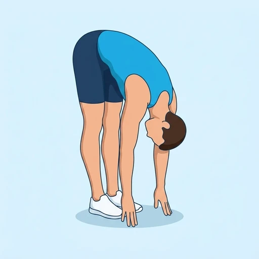

Standing Forward Fold to Half Lift
The familiar half-lift articulation: from a standing forward fold the chest lifts to a flat back with the spine long, then folds again. It teaches the difference between a rounded fold and a long-spine hinge.
Upper legs · Bodyweight · Beginner


Muscles worked by the Standing Forward Fold to Half Lift
Primary
Secondary
Also called: erector spinae, spinal erectors, lower back muscles, back extensors, hamstring, hamstrings.
Equipment
No equipment — this is a bodyweight exercise.
How to do the Standing Forward Fold to Half Lift
- Stand with the feet hip-width apart and fold forward from the hips.
- Rest the hands on the shins, the floor or blocks.
- Slide the hands up the shins and lift the chest until the back is flat and the spine is long.
- Fold back down, letting the head and neck release.
- Continue alternating between the two for the desired number of repetitions.
Form tips
- Keep a soft bend in the knees so the movement comes from the hips.
- Lift to a flat back rather than looking up; the neck follows the spine.
- Draw the shoulders away from the ears in the lifted position.
At a glance
| Body part | Upper legs |
|---|---|
| Category | Stretching |
| Force type | Dynamic |
| Mechanic | Compound |
| Difficulty | Beginner |
| Equipment | Bodyweight |
| Goals | Mobility |
| Tags | Mobility, Stretching |
| MET | 5.0 (metabolic equivalent, for calorie estimates) |
| Unilateral | No |
| Bodyweight | Yes |
| Dataset id | standing-forward-fold-to-half-lift |
Standing Forward Fold to Half Lift in German & Spanish
| German | Vorbeuge zum halben Aufrichten |
|---|---|
| Spanish | Flexión de Pie a Media Elevación |
Descriptions, instructions and tips ship in all three languages in the JSON.
Related exercises
Exercise data (JSON)
The record below is exactly what exercises.json ships for this exercise — names, descriptions, instructions and tips in English, German and Spanish.
{
"id": "standing-forward-fold-to-half-lift",
"name_en": "Standing Forward Fold to Half Lift",
"name_de": "Vorbeuge zum halben Aufrichten",
"name_es": "Flexión de Pie a Media Elevación",
"description_en": "The familiar half-lift articulation: from a standing forward fold the chest lifts to a flat back with the spine long, then folds again. It teaches the difference between a rounded fold and a long-spine hinge.",
"description_de": "Die bekannte Artikulation: aus der stehenden Vorbeuge hebt sich die Brust in einen flachen Rücken mit langer Wirbelsäule und senkt sich wieder. Zeigt den Unterschied zwischen runder Vorbeuge und Scharnier mit langer Wirbelsäule.",
"description_es": "La articulación conocida como media elevación: desde una flexión de pie el pecho sube hasta dejar la espalda plana y la columna larga, y luego vuelve a plegarse. Enseña la diferencia entre una flexión redondeada y una bisagra con la columna larga.",
"category": "stretching",
"force_type": "dynamic",
"mechanic": "compound",
"difficulty": "beginner",
"body_part": "upper_legs",
"primary_muscles": [
"erector_spinae",
"hamstrings"
],
"secondary_muscles": [
"gluteus_maximus"
],
"goals": [
"mobility"
],
"tags": [
"mobility",
"stretching"
],
"is_unilateral": false,
"is_bodyweight": true,
"instructions_en": [
"Stand with the feet hip-width apart and fold forward from the hips.",
"Rest the hands on the shins, the floor or blocks.",
"Slide the hands up the shins and lift the chest until the back is flat and the spine is long.",
"Fold back down, letting the head and neck release.",
"Continue alternating between the two for the desired number of repetitions."
],
"instructions_de": [
"Stell dich hüftbreit hin und beuge dich aus der Hüfte nach vorn.",
"Leg die Hände an die Schienbeine, auf den Boden oder auf Blöcke.",
"Schieb die Hände die Schienbeine hinauf und heb die Brust, bis der Rücken flach und die Wirbelsäule lang ist.",
"Beuge dich wieder nach unten und lass Kopf und Nacken locker.",
"Wechsle weiter zwischen beiden Positionen für die gewünschte Anzahl an Wiederholungen."
],
"instructions_es": [
"Ponte de pie con los pies a la anchura de las caderas y pliégate hacia delante desde las caderas.",
"Apoya las manos en las espinillas, en el suelo o en bloques.",
"Desliza las manos por las espinillas y eleva el pecho hasta dejar la espalda plana y la columna larga.",
"Vuelve a plegarte dejando que la cabeza y el cuello se relajen.",
"Sigue alternando entre ambas posiciones las veces indicadas."
],
"tips_en": [
"Keep a soft bend in the knees so the movement comes from the hips.",
"Lift to a flat back rather than looking up; the neck follows the spine.",
"Draw the shoulders away from the ears in the lifted position."
],
"tips_de": [
"Lass die Knie leicht gebeugt, damit die Bewegung aus der Hüfte kommt.",
"Heb in einen flachen Rücken, statt nach oben zu schauen; der Nacken folgt der Wirbelsäule.",
"Zieh in der angehobenen Position die Schultern von den Ohren weg."
],
"tips_es": [
"Deja una ligera flexión en las rodillas para que el movimiento venga de las caderas.",
"Sube a espalda plana en lugar de mirar hacia arriba; el cuello sigue a la columna.",
"Aleja los hombros de las orejas en la posición elevada."
],
"met": 5.0,
"images": {
"flat": {
"start": "images/flat/standing-forward-fold-to-half-lift-start.webp",
"peak": "images/flat/standing-forward-fold-to-half-lift-peak.webp"
}
}
}Fetch just this exercise
const { exercises } = await fetch(
"https://exercise-dataset.com/exercises.json"
).then(r => r.json());
const ex = exercises.find(e => e.id === "standing-forward-fold-to-half-lift");Free for personal and commercial in-app use with attribution (“Exercise data by RepDB”) — see the license and ready-made attribution snippets. Redistributing the data as a dataset or API is not permitted.